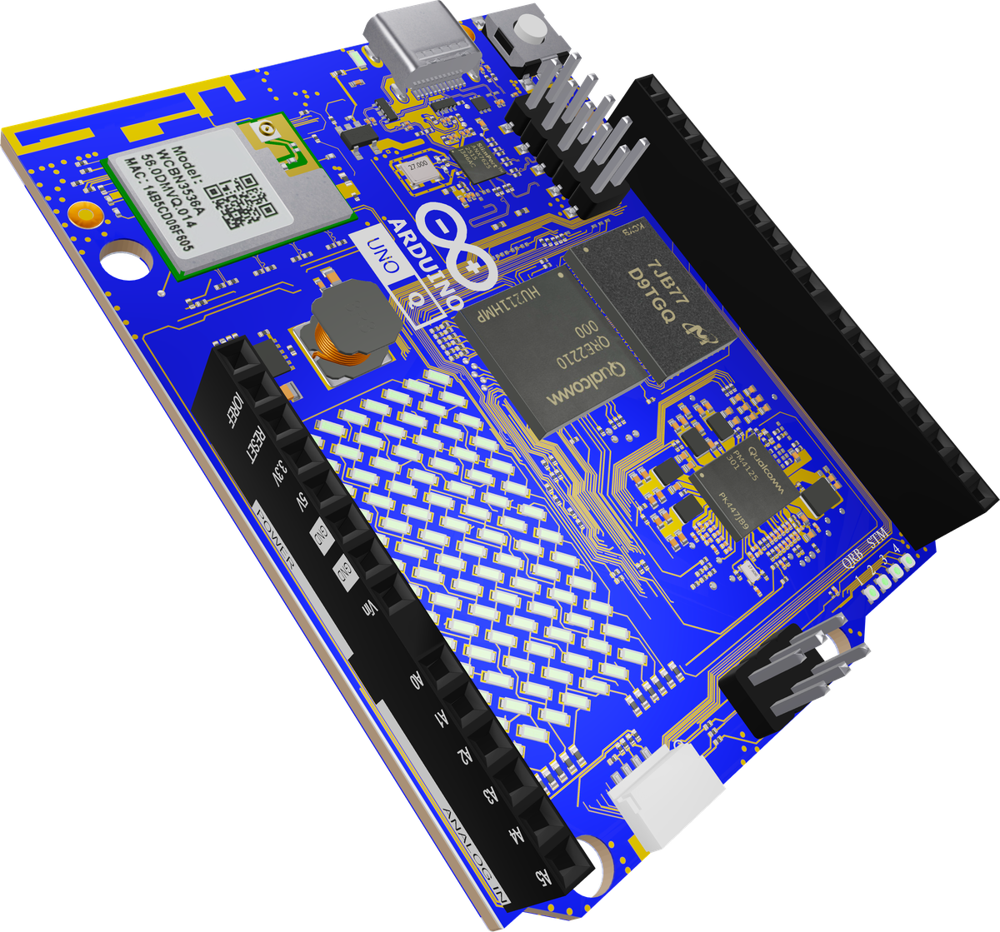

Wi-Fi sensing · Arduino UNO Q
IF-I-WI
FI
The sixth sense of buildings.
Presence detection from the Wi-Fi that is already in the room. No cameras, no wearables, no cloud.
RSSI + CSI
Edge ML
ESP32 mesh
Privacy by design